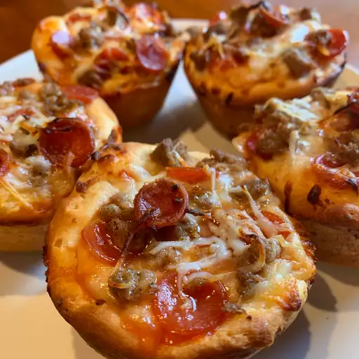

Pepperoni Pizza Muffins

Description
These pizza muffins are super easy, delicious, and ready in less than 30 minutes!
Ingredients
- Cooking spray
- 1 (10 ounce) can refrigerated buttermilk biscuit dough
- 10 tablespoons pizza sauce (such as Ragu® Homestyle)
- 10 slices pepperoni
- 10 tablespoons shredded mozzarella cheese, or as needed
Steps
- Preheat the oven to 425 degrees F (220 degrees C). Spray 10 muffin cups with cooking spray.
- Press biscuits, one at a time, between hands to flatten. Place each flattened biscuit in a muffin cup; press into bottom and up sides of cup. Set aside for dough to settle and slightly rise, about 5 minutes; lightly press dough into cups if needed.
- Spoon 1 tablespoon pizza sauce into each dough cup; top each with 1 slice pepperoni and 1 tablespoon mozzarella cheese.
- Bake in the preheated oven until pizza muffins are lightly browned and cheese is melted, about 10 minutes. Remove from tin and place on a cooling rack to cool slightly, about 5 minutes.
Back to index